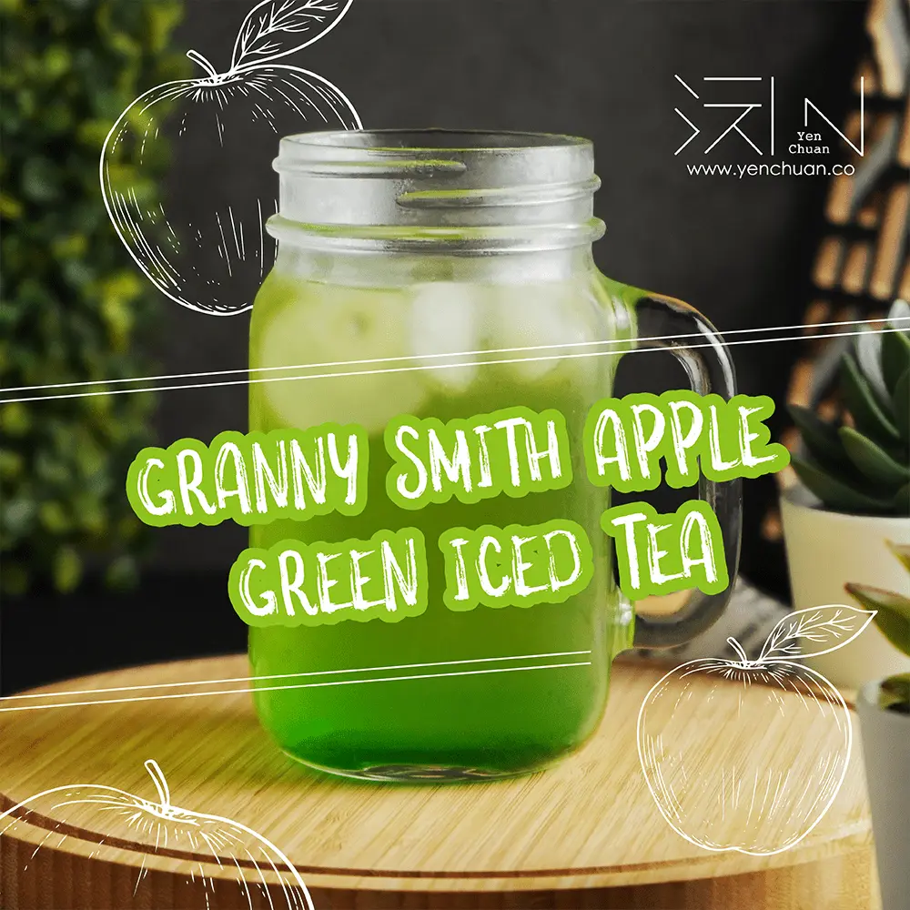

文章 / 飲品配方與資訊
Granny knows best! Try Granny Smith apple green tea!
這篇是英文原文，尚未完成繁體中文翻譯。中文選單與相關商品連結不會切回英文介面。

查看英文原文（尚未翻譯）
Feeling the hot summer sun creeping in? Time to stay cool with a refreshing glass of iced tea!
While there are many colourful combinations for iced tea, sometimes we want something a little special.
Feeling the same? Why not give our Granny Smith Apple Green Tea a try?
Why Granny Smith?
The bold, zesty flavour of Granny Smith apples are balanced nicely by green tea’s subtle, slightly smoky aroma.
The luscious, tart notes of crisp apple, combined with the light, grassy undertones of green tea make this blend a light, easy brew that’s delicious when chilled


Why apple green tea?
The lightly-sweet flavor will quench your thirst, while the apple slices kicks the fruitiness up a notch!
Crisp and comforting, this apple green tea complements the new season nicely – the perfect drink to enjoy in the hot weather, or to treat your friends in a garden party.
Give yourself a health boost!
What’s more, this drink is not only a thirst-quencher, but is also jam-packed with health benefits! Since green tea is loaded with antioxidants, it is a delicious way to boost your immune system and stay healthy under the hot summer sun.
With just enough caffeine to stave off the afternoon drowsiness, this drink is the perfect midday pick-me-up. Sip it alongside your favourite dessert, like a piece of banana pancake or a Strawberry Scone and all the fixings!
Ready to take on the summer heat?
Brew a cup today and raise a toast to everyone’s favorite Granny!

Granny Smith Apple Green Tea
Awaken your taste buds, with the refreshing crispness of Granny Smith Apple Green Tea.
What you’ll need
How to make:
Pour 300ml of hot water over green tea leaves in a pitcher; brew for 2-3 minutes. Strain tea leaves and adds ice for rapid cooling.
Stir in green apple juice syrup
Garnish with apple slices and serve!
Tip: Try adding a bit of honey or a squeeze of lemon!
This recipe can be easily doubled or tripled.
Having your friend over for a summer party? Brew up a large pitcher to share!
Want some boozy fun? Add a splash of vodka, tequila, or white rum for an adult treat.
Ready to begin?
No need to visit Grandma,
the ingredients you need are right at your fingertips.
Check it out!